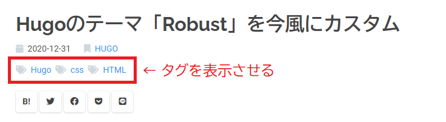

本ブログでは Hugo の Robust というテーマを拝借しています。バニラ状態でも十分素晴らしいデザインですが、個人的にカスタマイズしたところをメモしておきます。
フォントをユニバーサルデザインに
和文フォントには “BIZ UDGothic”, “BIZ UDPGothic”, 欧文フォントの本文に “Roboto”, 欧文フォントのヘッダには “Raleway” を採用しました。
現在の Windows 10 にはユニバーサルデザインのフォントである “BIZ UDGothic” が標準搭載されています。視認性・可読性に優れており、大変すばらしいフォントです。
ただ欧文には少し癖があるので、欧文フォント本文は Google Font より “Roboto”、ヘッダ部にはより映える “Raleway” を採用しました。
 Raleway はおしゃれなのでヘッダ映えしますね。Wが特徴的です。
Raleway はおしゃれなのでヘッダ映えしますね。Wが特徴的です。
以下のコードを /hugo_theme_robust/assets/styles.scss に追記/修正しました。Mac の方向けにはヒラギノを指定しています。
@import url("https://fonts.googleapis.com/css2?family=Raleway:wght@400;500;600;700&family=Roboto:wght@400;500;700&display=swap");
body, p, html, ul, ol, ul > li, ol > li {
font-family: "Roboto", "Hiragino Kaku Gothic ProN", "BIZ UDPGothic", sans-serif !important;
font-weight: 400;
}
h1, h2, h3, h4, h5 ,h6 {
font-family: "Raleway", "Hiragino Kaku Gothic ProN", "BIZ UDGothic", sans-serif;
font-weight: 700;
}
記事ヘッダにタグ一覧を表示
デフォルトでは記事ヘッダにタグが表示されていないので、表示させました。

/hugo_theme_robust/layouts/_default/summary.html のヘッダ内にタグを表示させるように追記しました。
<head>
<ul class="facts">
...
</ul>
<!-- タグ追記 -->
<ul class="facts_tags">
{{ range .Params.tags }}
<li><i class="fas fa-tags" aria-hidden="true"></i><a href="{{ $.Site.BaseURL }}tags/{{ . | urlize }}">{{ . }}</a> </li>
{{ end }}
</ul>
{{ partial "share.html" . }}
</head>
css は以下のように設定しました。
リンクオーバーで線が出てきます。記事内のリンクにも同様に追記しました。
ul.facts, ul.facts_tags{
margin: 0;
padding: 0;
li {
display: inline; // 横に並べる
font-size: .8rem;
}
i {
color: #cfd8dc;
margin-right: .5em;
}
&.sm li {
font-size: .7rem;
}
a {
position: relative;
display: inline-block;
transition: .3s;
// リンク中央下から線を出す
&:after{
position: absolute;
bottom: -0.05rem;
left: 50%;
content: '';
width: 0;
height: 1px;
background-color: $blue;
transition: .3s;
-webkit-transform: translateX(-50%);
transform: translateX(-50%);
}
&:hover::after{
width: 100%;
}
}
}
ul.facts > li{
margin-right: 1rem;
}
ul.facts_tags {
margin: 0.5rem 0rem 1.3rem 0rem;
line-height: 1.3rem;
li{
margin-right: .2rem;
}
}
ついでにフッターも同様のレイアウトに修正しました。

<footer class="article-footer">
<ul class="facts_tags">
<!-- カテゴリ -->
{{ with .Section }}
<li><i class="fas fa-bookmark" aria-hidden="true"></i><a href="{{ $.Site.BaseURL }}{{ . | urlize }}/">{{ . | upper }}</a></li>
{{ end }}
<!-- タグ -->
{{ range .Params.tags }}
<li><i class="fas fa-tags" aria-hidden="true"></i><a href="{{ $.Site.BaseURL }}tags/{{ . | urlize }}">{{ . }}</a> </li>
{{ end }}
</ul>
{{ partial "share.html" . }}
</footer>
記事のヘッダデザインを変更
以下のように変更しました。
article.sn > .article-body h2 {
font-size: 1.4rem;
line-height: 1.5rem;
margin: 1.5rem 0;
padding: 1.0rem 1.2rem;
border-left: .5rem solid $gray;
background: #f4f4f4;
}
article.sn > .article-body h3 {
font-size: 1.2rem;
line-height: 1.5rem;
margin: 1.5rem 0;
padding: .5rem .1rem;
border-bottom: 3px dashed $gray;
font-weight: 700;
}
article.sn > .article-body h4 {
font-size: 1.1rem;
line-height: 1.5rem;
/*margin: 0.5rem 0;*/
padding: .5rem .1rem;
font-weight: 700;
&:before{
content: '■ ';
}
}
記事内のサムネイルの表示制御
記事冒頭にサムネイルを表示させるかを config.toml で制御できるようにしました。/hugo_theme_robust/layouts/_default/summary.html の冒頭に if を追記してください。
{{ if .Site.Params.Posts.show_thumb_post | default false}}
<div class="thumb thumb-{{ .File.UniqueID }}"></div>
{{ end }}
config.toml では以下のように制御できます。
[params]
show_thumb_post = false
固定ヘッダ/ナビゲーションを追加

固定ヘッダとページナビゲーションを追加しました。/hugo_theme_robust/layouts/_default/baseof.html のヘッダ部を以下のように修正しました。
<header class="l-header">
<div class="title-logo-wrapper">
<!-- ロゴ画像 -->
<h1 class="logo">
<a href="{{ .Site.BaseURL }}"><img src="/images/logo.png"></a>
</h1>
<!-- ナビゲーション -->
<nav class="topnav">
<ul class="topnav_menu">
<li class="topnav_menu_item"><a href="/">Home</a></li>
<li class="topnav_menu_item"><a href="/categories">Categories</a></li>
<li class="topnav_menu_item"><a href="/tags">Tags</a></li>
<li class="topnav_menu_item"><a href="/about">About</a></li>
</ul>
</nav>
</div>
</header>
css は以下のようにしました。
// ヘッダー
.l-header{
padding-top: 2rem;
height: 20rem;
background: url("/images/tobias-keller-73F4pKoUkM0-unsplash.jpg") no-repeat center;
background-size: cover;
position: relative;
// 背景暗くする
&:before{
content: ' ';
background-color: rgba(0, 0, 0, .6);
position: absolute;
top: 0;
right: 0;
bottom: 0;
left: 0;
}
}
.title-logo-wrapper {
position: relative; // 浮かせる（背景を暗くする影響を受けないため）
max-width: 30rem;
display: flex;
flex-direction: column;
margin: 0 auto; // 中央揃え
.logo a {
img{
max-width: 30rem; // 書かないとダメ
}
}
.topnav {
.topnav_menu_item{
display: inline; // 横に並べる
margin: 0 0.3rem;
}
a {
font-family: "Raleway", "BIZ UDGothic", "Hiragino Kaku Gothic Pro", "Meiryo", sans-serif;
color: #FFF;
padding: 0.7rem 1.3rem;
border-radius: 2rem;
transition: all .3s;
&:hover{
background-color: #2196f3;
}
}
}
}
Google Analytics で Global Site Tag の設定に変更
HugoのテーマにGlobal Site Tag (gtag.js) の設定を追加した を参考に、Google Analytics の設定を導入しました。Robust のバニラでは旧バージョンの Google Analytics （“UA-” で始まる番号）しか対応していなかったため、新バージョン（“G-” で始まる番号）に対応させました。
/hugo_theme_robust/layouts/_default/baseof.html 内の <head>~</head> の “google-analytics うんたら” という部分を修正しました。
<!-- Google Analysis (gtag.js版) -->
{{ if not .Site.IsServer }}
{{ if and .Site.GoogleAnalytics (ne (getenv "HUGO_ENV") "DEV") }}
<script async src="https://www.googletagmanager.com/gtag/js?id={{ .Site.GoogleAnalytics }}"></script>
<script>
window.dataLayer = window.dataLayer || [];
function gtag(){dataLayer.push(arguments);}
gtag('js', new Date());
gtag('config', '{{ .Site.GoogleAnalytics }}');
</script>
{{ end }}
{{ end }}
その他
細かいところもいくつかカスタマイズしています。
- トップページ記事にホバーアクションを追加
- カテゴリとタグのデザインの背景を白に変更/ホバーアクションを追加
- ページナビゲーションにホバーアクションを追加
- Copyright の文章を変更
- CSS を直接 HTML に書かないように変更
さいごに
CSS/HTML/デザインの専門家ではないので、未熟な箇所があるかと思いますが、ご容赦ください 笑